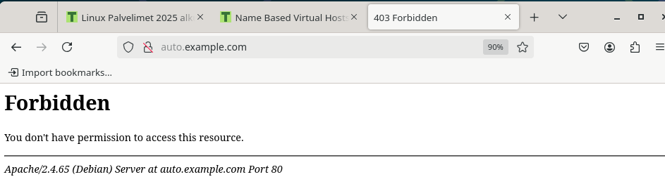

Harjoitus 3: Hello Web Server
Lue ja tiivistä (Muutama ranskalainen viiva riittää. Tässä alakohdassa ei tarvitse tehdä testejä tietokoneella)
Name Based Virtual Hosts on ApacheThe Apache Software Foundation, 2023
- IP pohjainen virtuaalipalvelin käyttää IP osoitetta valitessaan oikean virtuaalisen palvelimen jota palvella
- Nimi pohjaisessa palvelin luottaa että käyttäjä antaa oikean hostnamen osana HTTP headereitä.
- VirtualHost lohko tarvitsee vähintään ServerName ja DocumentRoot direktiivit. ServerAlias on valinnainen
Name Based Virtual Hosts on Apache Multiple Websites to Single IP Address, Karvinen, 2018
- Apache käyttää Nimi pohjaista virtuaalipalvelinta useiden verkkosivustojen isännöimiseen yhdellä IP-osoitteella.
Weppipalvelimen teko
a) Aloitin asentamalla apachen virtuaalikoneeseen. Tämän jälkeen seurasin Name Based Virtual Hosts on Apache - Multiple Websites to Single IP Address ohjeita ja tein oman apache palvelimen. Lisäsin aluksi localhostin vastaamaan vain "Default" kuten ohjeissakin. Sen lisäksi lisäsin auto.example.com sivun, joka vastaa dokumentilla osoitteesta /root/publicsites/auto.example.com. Lisäsin osoitteen myös /etc/hosts tiedostoon.
Törmäsin myöhemmin kuitenkin ongelmaan koitessani avata selaimessa auto.example.com ja koittaessani curl komennolla tulostaa auto.example.com
Pienen googlaamisen jälkeen huomasin, ettei /root hakemistolla ole oikeuksia kuin vain hakemiston omistavalla käyttäjällä. Lisäsin hakemistolle luku ja suoritus oikeudet muille kuin hakemiston omistajalle ja ryhmälle komennolla chmod o+rx root jonka jälkeen sivusto näkyi oikein terminaalissa sekä selaimessa.
/var/log/apache2/error.log näyttää myös tämmöistä erroria, jonka huomasin vastsa myöhemmin
b) Loki rivien analysointia
Ensimmäinen osa 127.0.0.1 kertoo asiakasyhteyden, josta pyyntö on tullut. Ensimmäinen - kertoo etäkäyttäjän tunnuksen, jota ei usein käytetä. Toinen - kertoo HTTP-autentikoinnin käyttäjätunnuksen. Molemmat näyttävät - jos niitä ei ole asetettu. Seuraavaksi [] sulkeiden välissä näytetään aika jolloin pyyntö on vastaanotettu. Muoto on dd/mmm/yyyy:hh:mm:ss ja lopussa vielä UTC aika. Näytetty aika on paikallisessa ajassa, ei UTC+0 ajassa. Seuraavaksi "" merkkien välissä näytetään puudettu metodi, resurssi sekä käytetty HTTP versio. seuraava 3 merkkinen numero kertoo palvelimen HTTP vastuaskoodin. 200-299 on onnistunut, 400-499 virhe asiakkaan pyynnössä ja 500-599 virhe palvelimen puolella. Seuraavana on datan koko tavuina, joka lähetetään asiakkaalle. "" merkkien välissä on osoite josta käyttäjä tuli sivulle. Tässä tapauksessa näytetään vain -. Lopuksi näytetään stringi, jossa kerrotaan asiakkaan selaimen sekä käyttöjärjestelmän tietoja. Näemme, että käytin Mozillan 5. versiota, Linux 64 bittistä järjestelmää, Firefoxin versiota 128.0
c) Etusivu uusiksi
Aloitin poistamalla tekemäni auto.example.com sivut. Poistin auto.example.com sivun /etc/hosts tiedostosta ja lisäsin hattu.example.com sivun osoitteeseen 127.0.0.1. Näin hattu.example.com sekä localhost osoittavat samaan paikkaan.
Tein virtual hostin konfiguraatio tiedoston /etc/apache2/hattu.example.com.conf ja tein sinne alla olevassa kuvassa olevat asetukset. ServerName on hattu.example.com, ServerAlias on localhost(käyttäjä pääsee tälle sivulle myös syöttämällä localhost), sivuston dokumentit löytyvät /root/publicsites/hattu.example.com hakemistosta sekä hakemiston indexi tiedosto on hattuexamplecom.html, joka on täytynyt asettaa erikseen, koska apache ei löydä indexi tiedostoa, jos se on jokin muu kuin index.html.
Oikeudet sivuston indeksi tiedostolle.
Sivusto selaimella sekä terminaalissa

e) Validi html5 sivu
f) curl -l uudelleenohjaa käyttäjän uuteen osoitteeseen, jos osoite johon käyttäjä yrittää päästä on siirtynyt toiseen osoitteeseen. Pelkkä curl komento antaa 3xx alkuisen virhekoodin, jos tätä lippua ei ole kutsussa, ja osoite on muuttanut toiseen osoitteeseen. Alla esimerkki hattu.example.com vastauksesta
Tehtävänanto
h3 Hello Web Server, Karvinen 2025Lähteet
- Karvinen, Tero 2025. Linux Palvelimet https://terokarvinen.com/linux-palvelimet/#h3-hello-web-server
- Karvinen, Tero 2018. Name Based Virtual Hosts on Apache – Multiple Websites to Single IP Address https://terokarvinen.com/2018/04/10/name-based-virtual-hosts-on-apache-multiple-websites-to-single-ip-address/
- The Apache Software Foundation, 2023.Name-based Virtual Host Support https://httpd.apache.org/docs/2.4/vhosts/name-based.html
- curl, luettu 31.8.2025. curl man page https://curl.se/docs/manpage.html